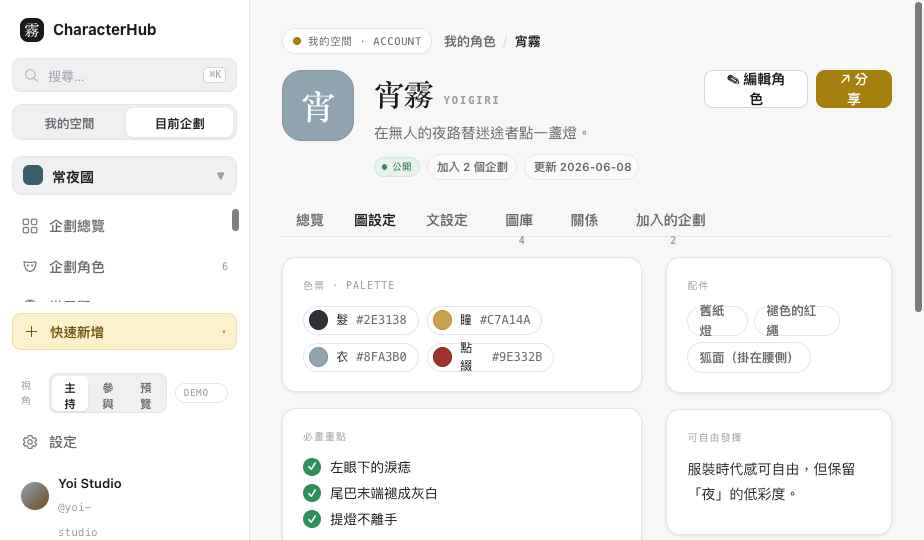
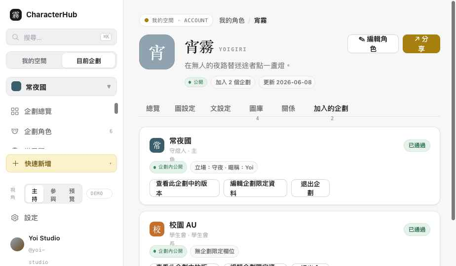
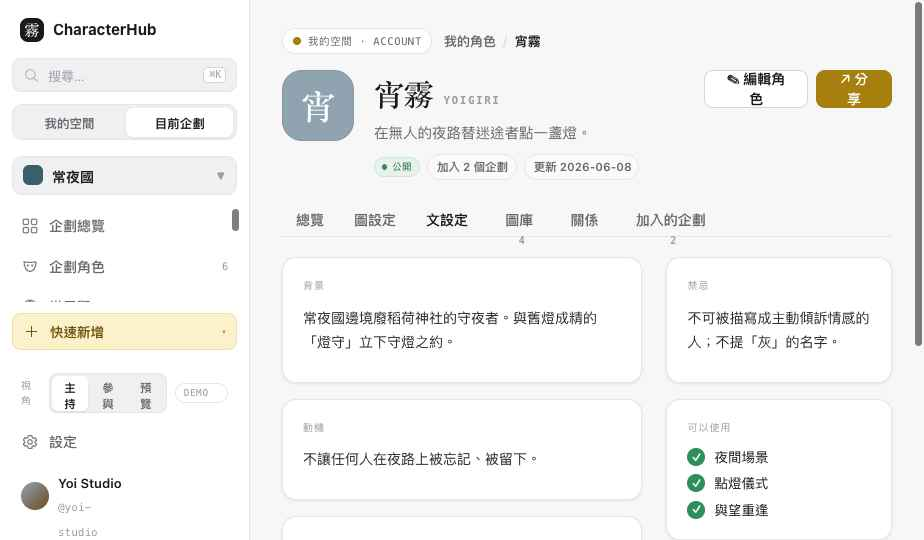
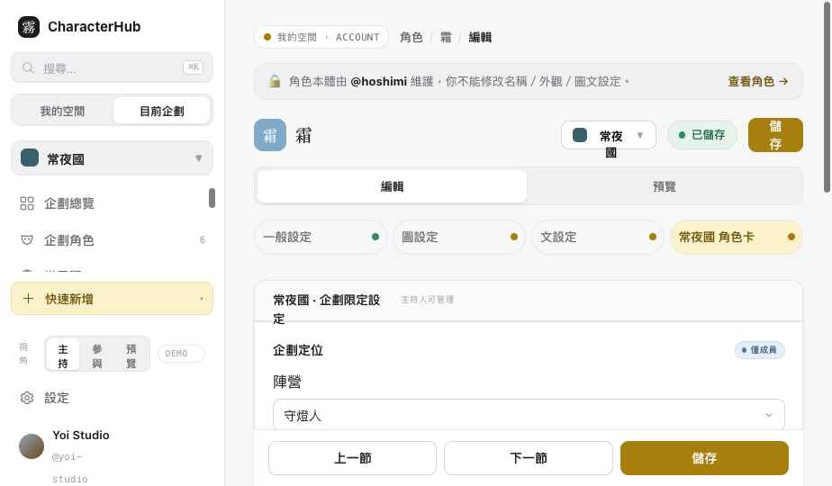

角色詳情與角色編輯器完成。核心是把 Character 本體（由擁有者維護）與 企劃限定設定 ProjectCharacterLink（依權限）在 UI 上徹底分區，並加上企劃版本切換、分享視圖、儲存／未儲存流程與手機編輯／預覽切換。
| 項目 | 作法 |
|---|---|
| 分享企劃版本 | ShareDrawer 移除 showProjectData 開關，改為明確選「不包含企劃限定資料」或單一 projectCharacterLinkId；不預設帶出全部。「完整設定」→「完整可分享設定」。 |
| 主持人限定欄位 | UI 獨立成區段，但不另建重複 hostOnlyFields：欄位定義在 ProjectTemplateField（帶 visibility），值仍存 ProjectCharacterLink.fieldValues，由 renderer 依 viewer 裁切。 |
| Dirty 分區 | Character 本體 dirty 與每個 ProjectCharacterLink 版本 dirty 分開。切換企劃只檢查目前 Link；離開 Editor 檢查所有範圍。已驗：本體改→切企劃不丟、常夜國 Link 改→切校園會提示、儲存不誤清另一區。 |
| Link 狀態 | 補齊 pending / approved / rejected / archived / removed。archived、removed 唯讀無編輯；rejected 顯示退回原因與重新提交入口。 |
| 關係 Scope | 角色詳情「關係」分頁改為依企劃分組（「在 X 關係圖中查看」），不再是未定義的全域角色關係。 |
| 鍵盤 / Focus | ShareDrawer 與未儲存對話框加上 Esc 關閉、Focus Trap、role=dialog / aria-modal，關閉後焦點回到觸發元。 |
兩頁都用同一條界線切分。編輯器分成「角色本體」與「企劃限定設定」兩個區塊；詳情頁的「加入的企劃」分頁則把每個企劃連結獨立成卡。主持人能管理 link，永遠不能改別人的本體。




| 視角 | 角色本體 | 企劃限定設定 |
|---|---|---|
| 角色擁有者 | 可編輯全部本體欄位 | 可編輯自己角色的 link 欄位 |
| 主持人（非擁有者） | 🔒 唯讀，顯示 OwnerNotice「由 @owner 維護」＋查看角色 | 可管理自己有權的企劃 link（含主持人限定欄位） |
| 一般參與者 | 🔒 唯讀（非自己角色） | 只能改自己的 link；主持人限定欄位不顯示 |
「分享」開啟 ShareDrawer，四種類型（一般／繪師／文手／完整可分享設定）。企劃限定資料預設「不包含」，且一次只能選一個企劃版本（projectCharacterLinkId），不會預設帶出所有企劃資料。私人企劃需符合可見性或明確授權。預覽標 Share Preview · Demo interaction only。
開啟宵霧詳情 → 點「分享」 試單一企劃版本分享（只帶出選定的企劃）。
編輯器右上 SaveStatus 走完整狀態機；皆為 Demo（不做正式 persistence）。
桌機（≥1080px）為三欄：左段落導覽 · 中編輯表單 · 右即時預覽，段落導覽顯示完成／未完成／未儲存點。窄於 1080px（含手機）改為：頂部角色名＋儲存狀態、編輯／預覽 Segmented Control、底部上一節／下一節／儲存；企劃版本切換在編輯區上方。不直接縮小三欄。請在實際瀏覽器以 360 / 390px 確認（預覽工具無法真正改視窗寬度）。
| 檔案 | 變更 |
|---|---|
| assets/data.js | OCData 補 Character 本體 detail（general/art/text/gallery、privateNotes）、completion／linkCompletion／shareScopes／characterFull helper；新增 guest2（他人擁有、我為成員）與 archived link。 |
| assets/character.css | Slice 2 共用樣式：CharacterHeader、Tabs、詳情區塊、ShareDrawer、三欄編輯器、SaveStatus、SectionNav、PreviewPanel、手機 Segmented。 |
| assets/character.js | 11 個共用元件：CharacterHeader / CharacterTabs / ShareDrawer / ProjectVersionSwitcher / SaveStatus / UnsavedChangesDialog / FieldVisibilityBadge / CompletionIndicator / OwnerNotice 等。 |
| pages/character.html | 重構為角色詳情（六分頁、OwnerNotice、分享）。 |
| pages/editor.html | 重構為角色編輯器（本體/企劃限定分區、版本切換、儲存流程、離開提示、手機切換）。Slice 2.1：每版本 dirty 分區、link 狀態（rejected/archived）。 |
Slice 2 完成，先停。等你驗收。
確認後再進 Slice 3（世界觀＋關係圖）。維持單一 OCData、Demo interaction only，未建立 Repository／API／Auth／第二套 Store。